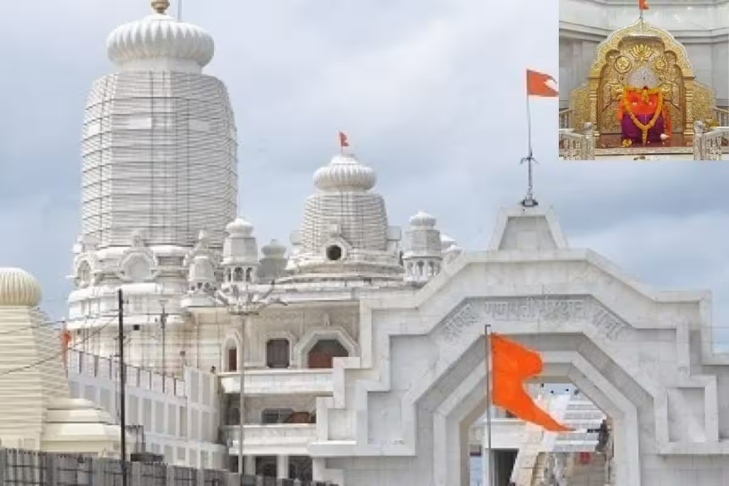
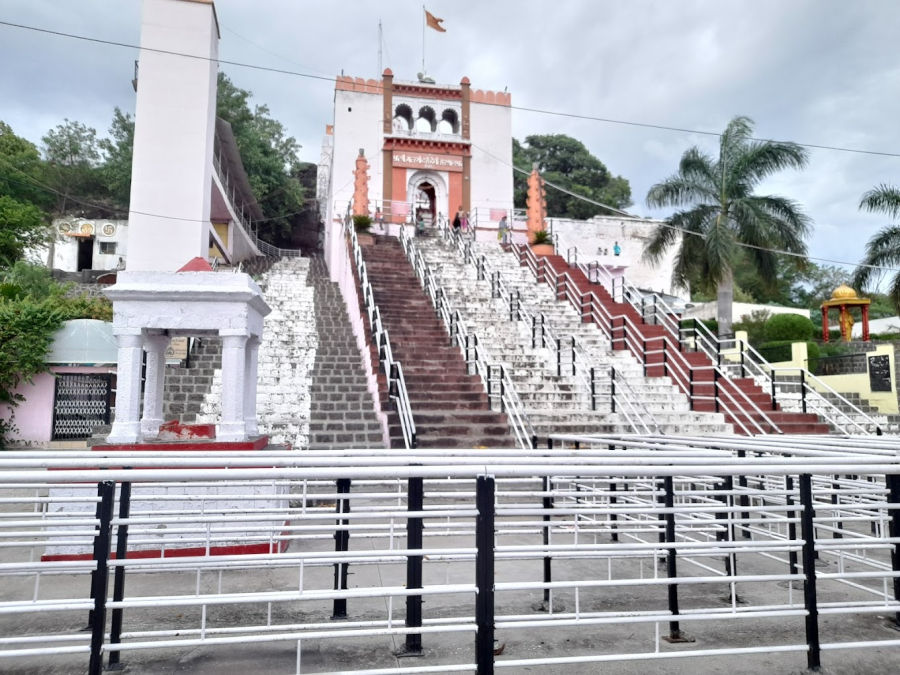

Un-Popular Tourist Spot, Jalna.
Jalna is a city in Jalna district in the Aurangabad Division, or Marathwada region, of the Indian state of Maharashtra. It was part of Hyderabad State as a tehsil of Aurangabad district, before Jalna district was formed effective 1 May 1981.
Shri Datta Ashram
Shri Datta Ashram was established in the year 1994 on the auspicious day of ‘Shri Ram Navmi’ by P P Tai Maharaj. The great saint and scholarly figure in the name of H H Shri Dattamaharaj Kavishwar were the prime inspiration behind this holy trust. Even within the State, one finds that Saints have had more presence and more impact in Central Maharashtra, especially so in the Marathwada region. Shri Dattashram, the Ashram founded by Parama Poojya (P. P.) Sau Tai Maharaj at Jalna in Marathwada is perhaps the finest culmination of ideas, thought streams and influences of different Saints and the different Sampradaya they have founded. No wonder then, that it should host many temples and shrines within one premise, unwaveringly signifying that all paths lead to only one reality.
Moti Bagh
There is a reservoir lake in the west side of the city of Jalna, called Moti talav, near which a beautiful garden was established, known as the Moti Baag. It is a garden with a variety of flowers, and also has a park for the children to play, complete with mini train and other play things. There is also a colorful music, karanje here.
You can enjoy some amazing street food sitting beside the Moti Talav. There are many food items available like pavbhaji, panipuri, chaat, snacks, etc.
Jalna Fort
Mastgad is the other name of Jalna fort. This was built by Kabil Khan in 1725. Nizam ul Mulk Asaf Jah was the one who ordered to build this fort. This occupies the town to the east side along with the citadel. The construction date is inscribed on the citadel in Persian.This fort also has a well which consists of lots of galleries.
It’s not only the architecture, inscribed language, but many of the other things also get clear into our head if we visit the place rather than reading about it. Accommodation and transportation can easily be availed. The best time to visit this place is from December to February.
Shree Ganesh Temple, Rajur
The GANESH temple of Rajur is situated in north 25 k.m. away from JALNA city. On every Chathurthi lots of pilgrims comes to pray the deity. A largely attended fair is held at the temple on Angarika Chaturthi.
The Rajur is considered as one of the complete PITH of Lord Ganesh in Ganesh Puran. Other PITH are at Morgaon, Chinchwad (Pune). The remaining HALF PITH is Padmalaya. The temple is under the renovation and it is in completion stage.
Matsyodari Devi Temple
The temple is dedicated to goddess Matsyadevi . The name of the deity and the temple is derived from the shape of the hill which looks like a fish. The temple is believed to be the most ancient in the region. There is an annual fair held every year in October, during the Sharad Navratri celebration, in this temple.
The temple is situated 21 Km away from the city of Jalna, and the nearest rail station is Jalna, from where trains are available. It can also be reached by car. n the Jalna district, there are a lot of temples and religious places which you can visit. There are temples like Ananda Swami Temple, Mamma Devi temple among others, which you can visit.
Shri Mamma Devi Temple
A place of Hindu religious importance, the Mamma Devi Temple is located in Jalna, a part of Aurangabad division, Maharashtra. It is dedicated the Goddess Mamma Devi, who is an incarnation of Goddess Durga. And what better time to visit this place than the Navratri? Hundreds of sacred devotees visit this place during this time and take part in the various religious activities like kirtans and bhajans or simply to pray and worship.
Jalna lies about 60 km from Aurangabad city and you can either hire car and drive to Jalna or opt for train. There are regular buses as well that you can choose. It takes around 2 hours by car to reach Jalna from Aurangabad. Once in Jalna, you would get several transport options to reach Mamma Devi and the other tourism places.
Video